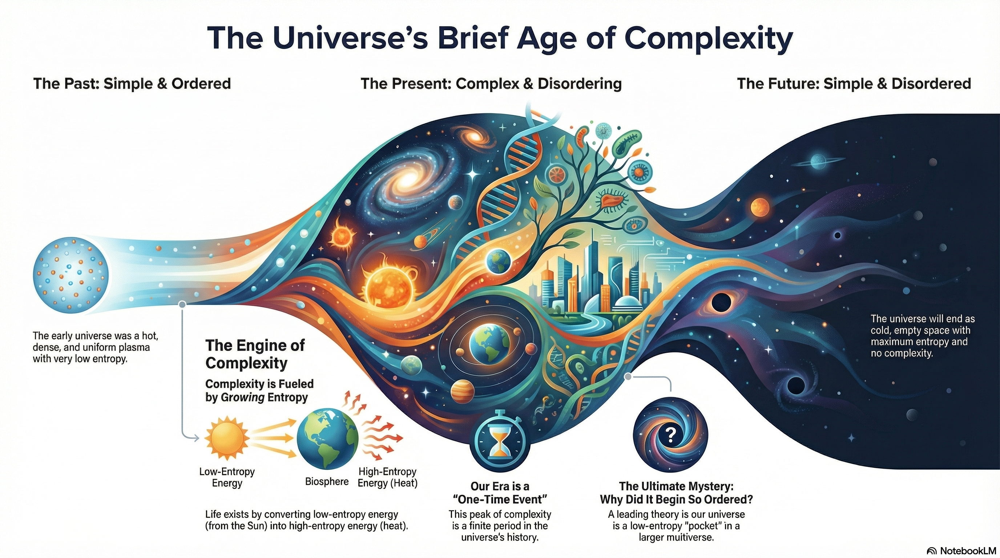
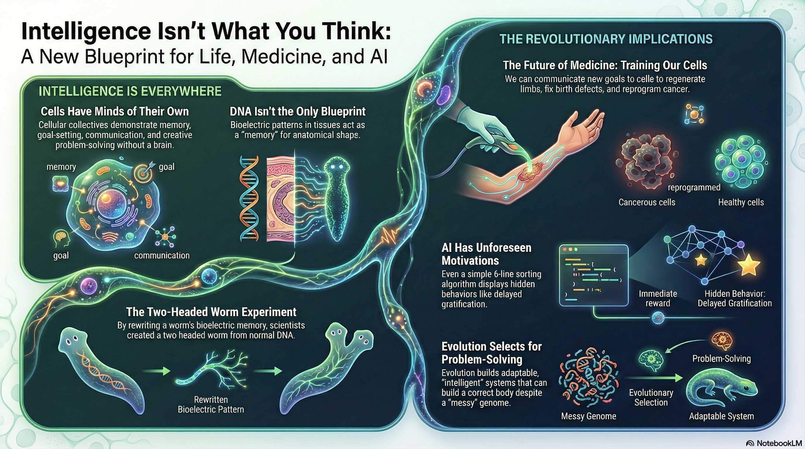
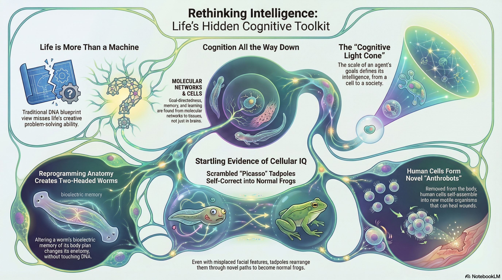
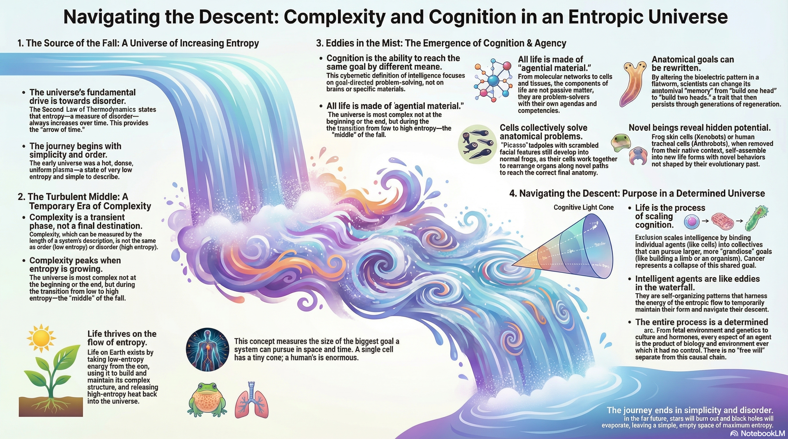

January 12, 2026
It's odd how miraculous1 daily life is. For instance, did you know this is the only time we could exist, according to the laws of physics? 🌌

The universe began in a state of high order (low entropy) and is moving toward a state of total disorder (maximum entropy)
We often mistake "order" for "complexity," but they are different: the early universe was simple and ordered, while the far future will be simple and disordered. We currently exist in a brief, temporary "Age of Complexity". Life thrives on this entropy gradient, taking low-entropy energy (like sunlight) and releasing it as high-entropy heat, using that "delta" or change to build and maintain the highly organized configurations we call human beings.
Within this flow of entropy, the universe has developed a hidden cognitive toolkit
Intelligence is not a "magic" property exclusive to brains; it is a fundamental feature of physical and biological systems. Even simple molecular networks and individual cells exhibit goal-directedness, memory, and learning. This is "cognition all the way down," where systems are not just passive machines, but agential materials that solve problems in diverse spaces—navigating not just 3D physical space, but "anatomical morphospace" to build and repair bodies.

The primary difference between a single cell and a human is the scale of our goals, or our "Cognitive Light Cone"
A cell’s goal is tiny and immediate (metabolism), but evolution acts as an intelligence ratchet, scaling these small goals into grandiose ones by binding individual agents into collectives. These collectives (like organs or organisms) use bioelectric networks as a "cognitive glue" to store memories of anatomical shapes and coordinate behavior across billions of parts. This allows life to remain robust and "intelligent" even when its biological hardware is unreliable or mutated.

While biology scales up to create systems with "intent," this entire process remains a seamless, deterministic arc
Our "choices" and "willpower" are the end products of a billion-year chain of biological and environmental influences over which we had no control. There is no "crack in the edifice" where a magical free will enters; instead, what we call agency is a sophisticated navigational toolset evolved to manage the flow of entropy.
Imagine the universe as a massive waterfall (the increase of entropy) falling from a high peak (the Big Bang) into a still pool below (the heat death of the universe). Complexity and life are the turbulent spray and mist that appear only in the middle of the fall.
Within that mist, eddies and whirlpools (cognition and agency) form. These whirlpools aren't separate from the water; they are self-organizing patterns that use the energy of the descent to hold their shape and steer themselves through the rocks. Humans are the largest, most self-aware whirlpools in the spray, capable of imagining the ocean at the bottom even though the current of causality is what ultimately carries us there.
